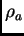

It is used to produce a 2D density plot. In this case a plane menu opens:
..............MENU for PLANE .......................
........ Change these parameters if necessary:......
/ 1. Normal vector to the plane: ( 0.00000, 0.00000, 1.00000)
| X1 vector in the plane: ( 0.00000, -1.00000, 0.00000)
| Y1 vector in the plane: ( 1.00000, 0.00000, 0.00000)
\\ 2. The plane has been specified by 3 points: NO
4. Central point on the plane:
in Angstroms => ( 0.00000, 0.00000, 0.00000)
in fractional => ( 0.00000, 0.00000, 0.00000)
44. Move the plane parallel to the existing one
5. Width along X1 axis (Angstroms): 5.00000
6. Width along Y1 axis (Angstroms): 5.00000
7. Parameters for the plotting
8. Preview the density
9. Perform calculation for the plotting: file out.dat_2
---- G e n e r a l s e t t i n g s -----
An. Coordinates are specified in: <AtomNumber>
Co. Show current atomic positions in fractional/Cartesian
Ap. Show atomic positions with respect to the plane
--- L e a v e t h e m e n u -------
Q. Return to the previous menu
---> Choose the item and press ENTER:
To start, first specify the plane. This means: the plane position (its normal), the central point and the two widths (along the two axes within the plane). It can be done in two ways:
3. Central point => the center of the triangle: YES
Central point on the plane:
in Angstroms => ( 0.00000, 0.00000, 0.66667)
in fractional => ( 0.00000, 0.00000, 0.13333)
The reference points A,B,C in (X1,Y1) are given as:
A = ( 0.00000,-0.66667)
B = (-1.00000, 0.33333)
C = ( 1.00000, 0.33333)
However, even if the first method was chosen, there is still a way
to find where your atoms are: the option Ap shows atomic
positions with respect to the chosen plane in the in-plane coordinates;
if an atom is out of the plane, its distance to the plane is also
shown. For instance, in the example below the plane was chosen parallel
to the water molecule plane, 0.5  away from it:
away from it:
.... Species < O> ......> 1
Tot # |----- Cartesian -----| X-plane Y-plane out-of-plane
1 1 0.00000 0.00000 -0.06633 0.76138 -0.59276 -0.50000
.... Species < H> ......> 2
Tot # |----- Cartesian -----| X-plane Y-plane out-of-plane
2 1 0.76138 0.00000 0.52643 0.00000 0.00000 -0.50000
3 2 -0.76138 0.00000 0.52643 1.52276 0.00000 -0.50000
Hit ENTER when done ...
You can also see atomic positions with respect to the Cartesian system in Co, while the way coordinates are specified can be changed in An.
In addition, option 44 allows you to move the plane parallel to the existing one. This might be useful if parallel slices through the system are to be taken previewing density every time.
Once the plane has been chosen, you can preview the density (option 8) and print out the density within the plane in 9 using a fine grid (given in option 7 submenu, see below). In the latter case, the file produced (its name is shown under that menu option) can be used in a plotting software to produce high quality graphs.
Similar to the line menu of Section 3.6.3.2, additional functionality is provided by option 7 that opens a submenu:
..............MENU ONE .......................
..... Change these parameters if necessary:...
0. Number of contour levels = 30
1. Resolution for the plot = 160
2. Resolution for the previewing = 30
3. Type of the preview picture is: contour
4. Low chop = 0.00 {disabled}
5. High chop = 0.00 {disabled}
6. Multiplication factor 1.00
7. Return to the previous menu.
---> Choose the item and press ENTER:
Here the number of contour levels for either of the plots (the preview and the high quality ones) is provided in option 0; the grid (the resolution) for the preview plot is specified in 2, while for the high quality file - in 1. The option 3 allows you to choose between 2D and 3D type of the plot, while options 4 and 5 are used to specify the chops and 7 the multiplication factor as in Section 3.6.3.2.
The 2D and 3D density plots for a water molecule are shown in Fig. 3.5 as an example.
|
 |
Names of files produced within this option are the same as in the case of 1D plots, see Section 3.6.3.2.